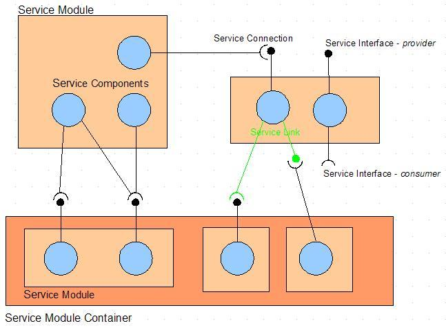
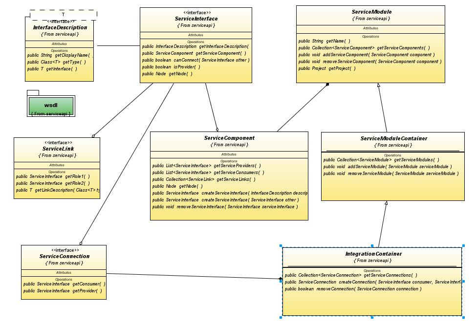

Service API defines a contract for introspecting development environment entities to discover components providing and consuming web services. ServiceAPI is abstract enough to allow service interface to be specified with different web service description standards (WSDL, WADL, ...). Also, each service component could be rendered with specific visualization of the underlying implementation technology such as Servlet, Enterprise Java Bean (EJB), Business Process (BPEL),...
Aside from discovery and visualization, Service API also specifies capabilities for creation of service implementation skeletons, as well as identifying possible service connections.
Following are entities defined by this API:

ServiceInterface represents an abstract service endpoint encapsulating a interface and its service aspect, whether it is of provider end or consumer end.
ServiceComponent defines service implementation unit of one or multiple interfaces but collocate in a single physical file such as a plain Java class, a BPEL process, an EJB or Servlet class...
ServiceModule contains multiple service components. Service module corresponds to service-unit in JBI deployment or runtime environment. There are differen types of service modules based on the underlying service implementation technology: BPEL, XSL Transform, JavaEE and plain Java.
ServiceModuleContainer is a compound service module, could contains multiple child service modules.
IntegrationContainer is a service module container with design-time provider-consumer relationships between service interfaces from its child modules.
Development projects expose service composition capabilities through project lookup. Designer editor should be able to obtain one instance of ServiceModule or IntegrationContainer from the project lookup.
